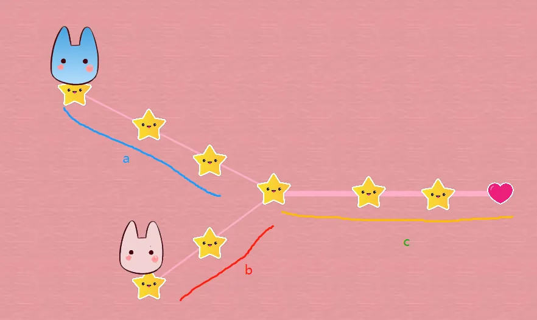

160. Intersection of Two Linked Lists
Question
Given the heads of two singly linked-lists headA and headB, return the node at which the two lists intersect. If the two linked lists have no intersection at all, return null.
For example, the following two linked lists begin to intersect at node c1:

The test cases are generated such that there are no cycles anywhere in the entire linked structure.
Note that the linked lists must retain their original structure after the function returns.
Custom Judge:
The inputs to the judge are given as follows (your program is not given these inputs):
intersectVal- The value of the node where the intersection occurs. This is0if there is no intersected node.listA- The first linked list.listB- The second linked list.skipA- The number of nodes to skip ahead inlistA(starting from the head) to get to the intersected node.skipB- The number of nodes to skip ahead inlistB(starting from the head) to get to the intersected node.
The judge will then create the linked structure based on these inputs and pass the two heads, headA and headB to your program. If you correctly return the intersected node, then your solution will be accepted.
Example 1:

Input: intersectVal = 8, listA = [4,1,8,4,5], listB = [5,6,1,8,4,5], skipA = 2, skipB = 3
Output: Intersected at '8'
Explanation: The intersected node's value is 8 (note that this must not be 0 if the two lists intersect).
From the head of A, it reads as [4,1,8,4,5]. From the head of B, it reads as [5,6,1,8,4,5]. There are 2 nodes before the intersected node in A; There are 3 nodes before the intersected node in B.
Example 2:

Input: intersectVal = 2, listA = [1,9,1,2,4], listB = [3,2,4], skipA = 3, skipB = 1
Output: Intersected at '2'
Explanation: The intersected node's value is 2 (note that this must not be 0 if the two lists intersect).
From the head of A, it reads as [1,9,1,2,4]. From the head of B, it reads as [3,2,4]. There are 3 nodes before the intersected node in A; There are 1 node before the intersected node in B.
Example 3:

Input: intersectVal = 0, listA = [2,6,4], listB = [1,5], skipA = 3, skipB = 2
Output: No intersection
Explanation: From the head of A, it reads as [2,6,4]. From the head of B, it reads as [1,5]. Since the two lists do not intersect, intersectVal must be 0, while skipA and skipB can be arbitrary values.
Explanation: The two lists do not intersect, so return null.
Constraints:
- The number of nodes of
listAis in them. - The number of nodes of
listBis in then. 1 <= m, n <= 3 * 1041 <= Node.val <= 1050 <= skipA < m0 <= skipB < nintersectValis0iflistAandlistBdo not intersect.intersectVal == listA[skipA] == listB[skipB]iflistAandlistBintersect.
✍🏽 My Solution
public class Solution {
public ListNode getIntersectionNode(ListNode headA, ListNode headB) {
if (headA == null || headB == null) return null;
ListNode A = headA;
ListNode B = headB;
while (A != B) {
A = A != null ? A.next : headB;
B = B != null ? B.next : headA;
}
return A;
}
}
🧠 Thought Process
- What is the time/space complexity of my solution? How do I know?
- time: O(m+n)
- space: O(1)
- What mistakes did I make?
- 當pa為null 起點應該是headB，寫成pa ⇒ 每次都寫錯
Solution #1 [爭哥解法]
public class Solution {
public ListNode getIntersectionNode(ListNode headA, ListNode headB) {
// 求链表A的⻓度na
int na = 0;
ListNode pA = headA;
while (pA != null) {
na++;
pA = pA.next;
}
// 求链表B的⻓度nb
int nb = 0;
ListNode pB = headB;
while (pB != null) {
nb++;
pB = pB.next;
}
// 先让指向⻓链表的指针多走na-nb或nb-na步
pA = headA;
pB = headB;
if (na >= nb) {
for (int i = 0; i < na-nb; ++i) {
pA = pA.next;
}
} else {
for (int i = 0; i < nb-na; ++i) {
pB = pB.next;
}
}
// 让pA和pB同步前进
while (pA != null && pB != null && pA != pB) {
pA = pA.next;
pB = pB.next;
}
if (pA == null || pB == null) return null;
else return pA;
}
}
Explanation (in my words)
- What is the space/time complexity of their solution?
- time: O(m+n)
- space: O(1)
Solution #2 [Two Pointers]
Runtime: 1 ms, faster than 99.01% of Java online submissions for Intersection of Two Linked Lists.
Memory Usage: 45.1 MB, less than 90.24% of Java online submissions for Intersection of Two Linked Lists.
public class Solution {
public ListNode getIntersectionNode(ListNode headA, ListNode headB) {
if (headA == null || headB == null) return null;
ListNode A = headA;
ListNode B = headB;
while (A != B) {
A = A != null ? A.next : headB;
B = B != null ? B.next : headA;
}
return A;
}
}
Explanation (in my words)
-
How does their solution work?
- 分別為鏈表A和鏈表B設置節點A和節點B，然後開始遍歷鏈表，如果遍歷完當前鏈表，則將指針指向另一個鏈表的頭部繼續遍歷，直到兩個指針相遇。
-
兩個指針分別走過的路徑為
指針A：a+c+b
指針B：b+c+a
-
故 a+c+b = b+c+a，因而如果两个链表相交，则指针A和指针B必定在相交结点相遇。

-
What is the space/time complexity of their solution?
- time: O(m+n) 兩個指針的長度
- space: O(1)
Solution #3 [爭哥-哈希表]
Runtime: 16 ms, faster than 9.28% of Java online submissions for Intersection of Two Linked Lists. Memory Usage: 56.1 MB, less than 8.16% of Java online submissions for Intersection of Two Linked Lists.
public class Solution {
public ListNode getIntersectionNode(ListNode headA, ListNode headB) {
HashSet<ListNode> set = new HashSet<>();
ListNode pA = headA;
ListNode pB = headB;
while (pA != null) {
set.add(pA);
pA = pA.next;
}
while (pB != null) {
if (set.contains(pB)) {
return pB;
}
pB = pB.next;
}
return null;
}
}
Explanation (in my words)
- How does their solution work?
- 建立一個哈希表，先遍歷headA將ListNode存入
- 遍歷headB，確認哈希表是否存在headA，存在則返回該節點
- What is the space/time complexity of their solution?
- time: O(n)
- space: O(n)